Общие сведения об отрисовке графики в WPF
В этом разделе приведены общие сведения о визуальном слое WPF. Основное внимание в нем уделено роли класса Visual в поддержке отрисовки в модели WPF.
Роль объекта Visual
Класс Visual — это базовая абстракция, и каждый объект FrameworkElement является производным от него. Эта абстракция также служит точкой входа для написания новых элементов управления WPF, и во многих случаях ее можно рассматривать как аналог дескриптора окна (HWND) в модели приложений Win32.
Объект Visual — это основной объект WPF, главная роль которого заключается в поддержке отрисовки. Элементы управления пользовательского интерфейса, такие как Button и TextBox, являются производными от класса Visual и используют его для сохранения данных отрисовки. Объект Visual обеспечивает поддержку следующих функций:
Отображение выходных данных: Визуализация сохраненного, сериализованного содержимого визуального элемента.
Преобразования. Выполнение преобразования визуального элемента.
Отсечение: Позволяет указать область отсечения для визуального элемента.
Проверка нажатия: Определяет, содержится ли координата или геометрическая фигура в пределах границ визуального объекта.
Расчеты ограничивающих прямоугольников: Определение ограничивающего прямоугольника визуального объекта.
Однако объект Visual не включает поддержку функций, не относящихся к отрисовке, например:
Обработка событий
Макет
Стили
Привязка данных
Глобализация
Visual указывается в виде открытого абстрактный класс, из которого должны наследоваться дочерние классы. На следующем рисунке показана иерархия визуальных объектов, которые предоставляются в WPF.
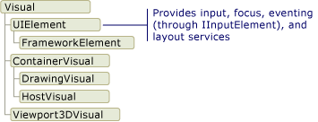
Класс DrawingVisual
DrawingVisual — упрощенный класс, используемый для отрисовки фигур, изображений и текста. Этот класс считается упрощенным, так как не предоставляет средств для работы с разметкой и обработку событий, что повышает его производительность. Поэтому этот класс идеально подходит для фоновых рисунков или клипов. DrawingVisual может быть использован для создания пользовательского визуального объекта. Дополнительные сведения см. в разделе Использование объектов DrawingVisual.
Класс Viewport3DVisual
Viewport3DVisual обеспечивает связь между двухмерными Visual и объектами Visual3D. Класс Visual3D является базовым классом для всех трехмерных визуальных элементов. Для Viewport3DVisual необходимо определить значения Camera и Viewport. Камера (Camera) позволяет просмотреть сцену. Окно просмотра (Viewport) определяет, где проекция преобразуется в двумерную поверхность. Дополнительные сведения о трехмерной графике в WPF см. в разделе Общие сведения о трехмерной графике.
Класс ContainerVisual
Класс ContainerVisual используется как контейнер для коллекции объектов Visual. Класс DrawingVisual является производным от класса ContainerVisual, поэтому он может содержать коллекцию визуальных объектов.
Рисование содержимого в объектах Visual
Объект Visual хранит свои данные отрисовки в виде списка инструкций векторной графики. Каждый элемент в списке инструкций представляет низкоуровневый набор графических данных и связанных ресурсов в сериализованном формате. Существует четыре различных типа данных отрисовки, которые могут включать графическое содержимое.
| Тип содержимого для отрисовки | Описание |
|---|---|
| Векторная графика | Представляет векторные графические данные и все связанные сведения о Brush и Pen. |
| Изображение | Представляет изображение в пределах области, определяемой Rect. |
| Глиф | Представляет рисунок, отображающий объект GlyphRun, который представляет собой последовательность глифов для указанного ресурса шрифта. Таким образом представляется текст. |
| Видео | Представляет рисунок, отображающий видео. |
DrawingContext позволяет заполнять Visual визуальным содержимым. При использовании команд рисования объекта DrawingContext фактически происходит сохранение набора данных отрисовки, которые позже будут использоваться графической системой; рисование на экране в режиме реального времени не выполняется.
При создании элементов управления WPF, например Button, элемент управления неявно создает данные для своей отрисовки. Например, установка свойства Content элемента управления Button заставляет его сохранить представление отрисовки для глифа.
Объект Visual описывает свое содержимое в виде одного или нескольких объектов Drawing, содержащихся в DrawingGroup. Объект DrawingGroup также описывает маски непрозрачности, преобразования, эффекты для точечных рисунков и другие операции, которые применяются к его содержимому. DrawingGroup При отрисовке содержимого операции, применяются в следующем порядке: OpacityMask, Opacity, BitmapEffect, ClipGeometry, GuidelineSet, а затем Transform.
Ниже показан порядок, в котором операции DrawingGroup применяются при отрисовке.

Порядок операций для DrawingGroup
Дополнительные сведения см. в разделе Обзор объектов Drawing.
Отображение содержимого на визуальном уровне
Вы никогда непосредственно не создаете экземпляр DrawingContext, однако можете получить контекст рисования с помощью определенных методов, например DrawingGroup.Open и DrawingVisual.RenderOpen. В следующем примере DrawingContext извлекается из DrawingVisual и используется для рисования прямоугольника.
// Create a DrawingVisual that contains a rectangle.
private DrawingVisual CreateDrawingVisualRectangle()
{
DrawingVisual drawingVisual = new DrawingVisual();
// Retrieve the DrawingContext in order to create new drawing content.
DrawingContext drawingContext = drawingVisual.RenderOpen();
// Create a rectangle and draw it in the DrawingContext.
Rect rect = new Rect(new System.Windows.Point(160, 100), new System.Windows.Size(320, 80));
drawingContext.DrawRectangle(System.Windows.Media.Brushes.LightBlue, (System.Windows.Media.Pen)null, rect);
// Persist the drawing content.
drawingContext.Close();
return drawingVisual;
}
Перечисление содержимого рисования на визуальном уровне
Наряду с другими своими возможностями, объекты Drawing также предоставляют объектную модель для перечисления содержимого Visual.
Note
При перечислении содержимого визуального элемента извлекаются объекты Drawing, а не базовое представление данных отрисовки в виде списка инструкций векторной графики.
В следующем примере метод GetDrawing используется для извлечения значения DrawingGroup из Visual и перечисления содержимого группы.
public void RetrieveDrawing(Visual v)
{
DrawingGroup drawingGroup = VisualTreeHelper.GetDrawing(v);
EnumDrawingGroup(drawingGroup);
}
// Enumerate the drawings in the DrawingGroup.
public void EnumDrawingGroup(DrawingGroup drawingGroup)
{
DrawingCollection dc = drawingGroup.Children;
// Enumerate the drawings in the DrawingCollection.
foreach (Drawing drawing in dc)
{
// If the drawing is a DrawingGroup, call the function recursively.
if (drawing is DrawingGroup group)
{
EnumDrawingGroup(group);
}
else if (drawing is GeometryDrawing)
{
// Perform action based on drawing type.
}
else if (drawing is ImageDrawing)
{
// Perform action based on drawing type.
}
else if (drawing is GlyphRunDrawing)
{
// Perform action based on drawing type.
}
else if (drawing is VideoDrawing)
{
// Perform action based on drawing type.
}
}
}
Использование визуальных объектов для создания элементов управления
Многие из объектов в WPF состоят из других визуальных объектов, то есть они могут содержать различные иерархии объектов-потомков. Многие элементы пользовательского интерфейса в WPF, например элементы управления, состоят из множества визуальных объектов, которые представляют различные типы отрисовываемых элементов. Например, элемент управления Button может содержать ряд других объектов, в том числе ClassicBorderDecorator, ContentPresenter и TextBlock.
В следующем коде показано определение элемента управления Button в разметке.
<Button Click="OnClick">OK</Button>
Если бы мы перечислили визуальные объекты, составляющие стандартный элемент управления Button, обнаружилась бы показанная ниже иерархия визуальных объектов:
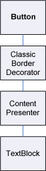
Элемент управления Button содержит элемент ClassicBorderDecorator, который, в свою очередь, содержит элемент ContentPresenter. Элемент ClassicBorderDecorator отвечает за рисование границ и фона для Button. Элемент ContentPresenter отвечает за отображение содержимого Button. В данном случае, поскольку отображается текст, элемент ContentPresenter содержит элемент TextBlock. Тот факт, что элемент управления Button использует ContentPresenter, означает, что его содержимое можно представить в виде других элементов, например Image, или геометрического объекта, например EllipseGeometry.
Шаблоны элементов управления
Ключевую роль в развертывании элементов управления в иерархию играет ControlTemplate. Шаблон элемента управления определяет его визуальную иерархию по умолчанию. При явной ссылке на элемент управления вы неявно ссылаетесь на его визуальную иерархию. Для изменения внешнего вида элемента управления вы можете переопределить значения по умолчанию для его шаблона. Например, можно изменить значение цвета фона элемента управления Button так, чтобы использовалось значение линейного градиента цвета вместо значения сплошного цвета. Дополнительные сведения см. в разделе Стили и шаблоны кнопок.
Элемент пользовательского интерфейса, такие как Button управления, содержит несколько списков инструкций векторной графики, которые описывают полностью определяют отрисовку элемента управления. В следующем коде показано определение элемента управления Button в разметке.
<Button Click="OnClick">
<Image Source="images\greenlight.jpg"></Image>
</Button>
Если перечислить визуальные объекты и списки инструкций векторной графики, которые составляют элемент управления Button, обнаружится показанная ниже иерархия объектов:
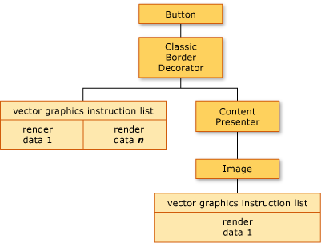
Элемент управления Button содержит элемент ClassicBorderDecorator, который, в свою очередь, содержит элемент ContentPresenter. ClassicBorderDecorator Элемент отвечает за рисование всех отдельных графических элементов, составляющих границу и фон кнопки. Элемент ContentPresenter отвечает за отображение содержимого Button. В этом случае, поскольку выполняется отображение изображения, ContentPresenter элемент содержит Image элемент.
При работе с иерархией визуальных объектов и списками инструкций векторной графики следует учитывать несколько моментов.
Порядок иерархии представляет порядок отрисовки графической информации. От корневого визуального элемента проход дочерних элементов осуществляется слева направо и сверху вниз. Если у элемента есть дочерние визуальные элементы, они проходятся до элементов того же уровня.
Неконечные элементы в иерархии, например ContentPresenter, используются для хранения дочерних элементов — они не содержат списков инструкций.
Если визуальный элемент содержит как список инструкций векторной графики, так и визуальные дочерние объекты, то список инструкций в родительском визуальном элементе выполняется перед тем, как будут прорисованы любые визуальные дочерние объекты.
Элементы в списке инструкций векторной графики обрабатываются слева направо.
Визуальное дерево
Визуальное дерево содержит все визуальные элементы, содержащиеся в пользовательском интерфейсе приложения. Поскольку визуальный элемент содержит сохраняемую графическую информацию, визуальное дерево можно представить как граф сцены, содержащий все сведения об отрисовке, необходимые для формирования данных, выводимых на устройство отображения. Это дерево представляет собой совокупность всех визуальных элементов, создаваемых непосредственно в приложении (в коде или в разметке). Визуальное дерево также содержит все визуальные элементы, создаваемые путем расширения шаблона элементов, например элементы управления и объекты данных.
В следующем коде показан элемент StackPanel, определенный в разметке.
<StackPanel>
<Label>User name:</Label>
<TextBox />
<Button Click="OnClick">OK</Button>
</StackPanel>
Если перечислить визуальные объекты, которые составляют элемент StackPanel в примере разметки, обнаружится показанная ниже иерархия визуальных объектов:
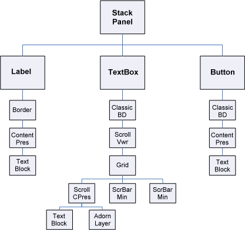
Порядок отрисовки
Визуальное дерево определяет порядок отрисовки визуальных элементов и графических объектов WPF. Обработка начинается с корневого визуального элемента, самого верхнего узла в визуальном дереве. Затем обрабатываются дочерние элементы корневого визуального элемента слева направо. Если у визуального элемента есть дочерние элементы, они обрабатываются перед элементами, находящимися на одном уровне с визуальным элементом. Это означает, что содержимое дочерних визуальных элементов отображается перед содержимым самого визуального элемента.
Корневой визуальный элемент
Корневой визуальный элемент — это самый верхний элемент в иерархии визуального дерева. В большинстве приложений базовым классом корневого визуального элемента является либо Window, либо NavigationWindow. Однако при размещении визуальных объектов в приложении Win32 корневым визуальным элементом будет самый верхний визуальный элемент в окне Win32. Дополнительные сведения см. в статье Руководство по размещению визуальных объектов в приложении Win32.
Связь с логическом деревом
Логическое дерево в WPF представляет элементы приложения во время выполнения. Хотя этим деревом нельзя управлять напрямую, с помощью этой схемы удобно представить наследование свойств и маршрутизацию событий. В отличие от визуального дерева, логическое дерево может представлять и невизуальные объекты, например ListItem. Во многих случаях логическое дерево приближается к определению разметки приложения. В следующем коде показан элемент DockPanel, определенный в разметке.
<DockPanel>
<ListBox>
<ListBoxItem>Dog</ListBoxItem>
<ListBoxItem>Cat</ListBoxItem>
<ListBoxItem>Fish</ListBoxItem>
</ListBox>
<Button Click="OnClick">OK</Button>
</DockPanel>
Если перечислить логические объекты, которые составляют элемент DockPanel в примере разметки, обнаружится иерархия логических объектов, показанная ниже:
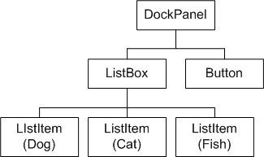
Схема логического дерева
Визуальное дерево и логическое дерево синхронизируются с текущим набором элементов приложения, отражая добавление, удаление или изменение элементов. Однако эти деревья отражают различные представления приложения. В отличие от визуального дерева, в логическом дереве не ракрываются ContentPresenter элементов управления. Это означает, что между логическим деревом и визуальным деревом для одного и того же набора объектов нет прямого однозначного соответствия. На самом деле, вызов метода GetChildren объекта LogicalTreeHelper и метода GetChild объекта VisualTreeHelper с одним и тем же элементом в качестве параметра дает разные результаты.
Дополнительные сведения о логическом дереве см. в разделе Деревья в WPF.
Просмотр визуального дерева с помощью XamlPad
Средство WPF XamlPad позволяет просматривать и изучать визуальное дерево, соответствующее текущему содержимому XAML. Для отображения визуального дерева нажмите кнопку Показать визуальное дерево. Ниже показано расширение содержимого XAML в узлы визуального дерева на панели Обозреватель визуального дерева XamlPad.
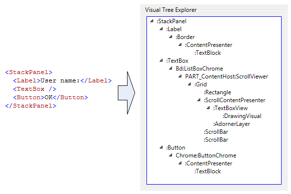
Обратите внимание, что каждый из элементов управления Label, TextBox и Button отображает отдельную иерархию визуальных объектов в панели Обозреватель визуального дерева XamlPad. Это обусловлено тем, что элементы управления WPF имеют шаблон ControlTemplate, который содержит визуальное дерево этого элемента управления. При явной ссылке на элемент управления вы неявно ссылаетесь на его визуальную иерархию.
Профилирование производительности для объекта Visual
WPF предоставляет набор средств профилирования производительности, позволяющие анализировать поведение времени выполнения приложения и определить, какие оптимизации производительности, которые можно применить. Средство Visual Profiler предоставляет подробные данные о производительности в удобном графическом формате, сопоставляя их напрямую с визуальным деревом приложения. На этом снимке экрана показан раздел Использование ЦП средства Visual Profiler. В этом разделе вы можете получить точное представление об использовании объектом служб WPF, таких как отрисовка и разметка.
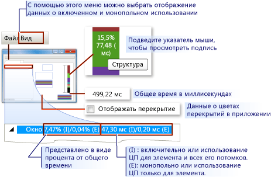
Отображение данных Visual Profiler
Поведение отрисовки для объекта Visual
WPF включает несколько возможностей, влияющих на отрисовку визуальных объектов: графика, векторная графика и аппаратно независимая графика.
Абстрактный графический режим
Для понимания роли объекта Visual необходимо хорошо представлять различие между системами с непосредственным и абстрактным графическими режимами. В стандартном приложении Win32 на основе GDI или GDI+ используется непосредственный графический режим. Это означает, что приложение отвечает за перерисовку той части клиентской области, которая стала недействительной из-за таких действий, как изменение размера окна или изменение внешнего вида объекта.
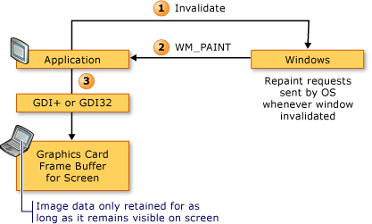
В WPF, напротив, используется абстрактный графический режим. Это означает, что в объектах приложения, у которых есть внешний облик, определяется набор сериализованных графических данных. После определения графических данных система отвечает на все запросы перерисовки для отрисовки объектов приложения. Даже во время выполнения можно изменять или создавать объекты приложения, при этом система будет обрабатывать запросы на перерисовку. Преимущество абстрактного режима состоит в том, что данные отрисовки всегда сохраняются приложением в сериализованном виде, при этом за отрисовку отвечает система. На следующей схеме показано, как приложение полагается на WPF в обработке запросов на отрисовку.
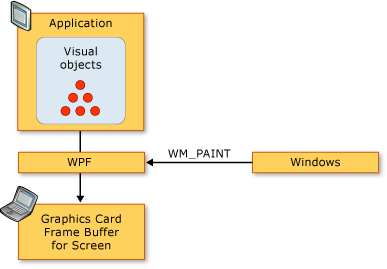
Интеллектуальная перерисовка
Одним из основных преимуществ использования абстрактного графического режима является то, что WPF может эффективно оптимизировать элементы приложения, которые требуют перерисовки. Даже при наличии сложной сцены с различными уровнями прозрачности разработчикам обычно не нужно писать специальный код для оптимизации перерисовки. Сравните это с программированием для Win32, в котором можно потратить значительные усилия на оптимизацию приложения, уменьшая объем перерисовки в области обновления. Пример сложного случая оптимизации перерисовки для приложений Win32 см. в разделе Перерисовка в области обновления.
Векторная графика
WPF использует векторную графику качестве формата данных отрисовки. Векторная графика, к которой относятся масштабируемые векторные рисунки (SVG), метафайлы Windows (WMF) и шрифты TrueType, хранит данные отрисовки и передает их в виде списка инструкций, которые описывают, как воссоздать изображение с помощью графических примитивов. Например, шрифты TrueType — это контурные шрифты, которые описывают набор линий, кривых и команд, а не массив точек. Одним из основных преимуществ векторной графики является возможность масштабирования до любого размера и разрешения.
В отличие от векторной графики в растровой графике данные отрисовки представлены в попиксельном виде для определенного разрешения. Одним из ключевых различий между растровой и векторной графикой является соответствие исходному изображению. Например, при изменении размера исходного изображения в растровой графике изображение растягивается, тогда как в векторной — масштабируется с сохранением качества.
На следующем рисунке показано исходное изображение, которое было увеличено в 3 раза (масштаб 300 %). Обратите внимание на искажения, которые появляются при растяжении исходного изображения в растровом формате по сравнению с векторным.
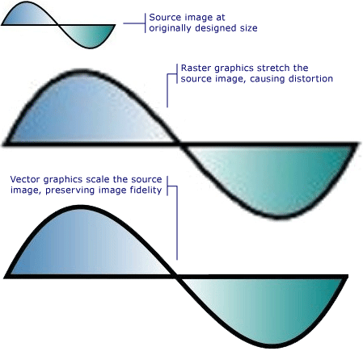
В следующем примере показано определение двух элементов Path. Во втором элементе с помощью ScaleTransform к инструкциям отрисовки первого элемента применяется операция изменения размера на 300 %. Обратите внимание, что инструкции отрисовки в элементе Path остаются без изменений.
<Path
Data="M10,100 C 60,0 100,200 150,100 z"
Fill="{StaticResource linearGradientBackground}"
Stroke="Black"
StrokeThickness="2" />
<Path
Data="M10,100 C 60,0 100,200 150,100 z"
Fill="{StaticResource linearGradientBackground}"
Stroke="Black"
StrokeThickness="2" >
<Path.RenderTransform>
<ScaleTransform ScaleX="3.0" ScaleY="3.0" />
</Path.RenderTransform>
</Path>
О разрешении и аппаратно независимой графике
Существуют два фактора, которые определяют размер текста и графики на экране: разрешение и количество точек на дюйм. Разрешение определяет число пикселей, отображаемых на экране. Чем выше разрешение, тем меньше размер пикселей и тем меньше отображаемые объекты и текст. Изображение на мониторе с разрешением 1024 x 768 значительно уменьшится, если изменить разрешение на 1600 x 1200.
Другой системный параметр, количество точек на дюйм, описывает размер дюйма экрана в пикселях. Для большинства систем Windows количество точек на дюйм составляет 96, т. е. на одном дюйме экрана находится 96 пикселей. При повышении количества точек на дюйм экранный дюйм увеличивается, при понижении — уменьшается. Это означает, что дюйм экрана не совпадает с размером настоящего дюйма, по крайней мере в большинстве систем. При увеличении количества точек на дюйм изображения и текст становятся больше, так как увеличивается размер экранного дюйма. Увеличение количества точек на дюйм может сделать текст более удобным для чтения, особенно при высоких разрешениях.
Не все приложения поддерживают количество точек на дюйм: в некоторых приложениях в качестве основной единицы измерения используются аппаратно зависимые пиксели, и изменение количества точек на дюйм не влияет на такие приложения. Во многих других приложениях количество точек на дюйм используется при описании размеров шрифта, но для остальных элементов используются пиксели. Слишком маленькое или слишком большое количество точек на дюйм может вызвать проблемы с разметкой для этих приложений, так как размер текста приложения будет изменяться с изменением системного количества точек на дюйм, тогда как интерфейс приложения изменяться не будет. Для приложений, разработанных с помощью WPF, эта проблема устранена.
WPF поддерживает автоматическое масштабирование с помощью аппаратно независимых пикселей в качестве основной единицы измерения, вместо аппаратно зависимые пиксели; изображения и текст масштабируются правильно без дополнительных усилий от разработчика приложения. На следующем рисунке показан пример отображения текста и графики WPF с различными параметрами количества точек на дюйм.
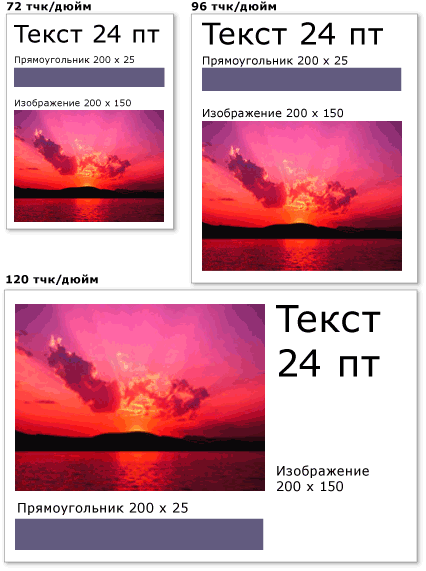
Изображения и текст с различными параметрами количества точек на дюйм
Класс VisualTreeHelper
Класс VisualTreeHelper — это статический вспомогательный класс, предоставляющий низкоуровневые функции для программирования на уровне визуального объекта, что полезно в определенных случаях, например при разработке пользовательских элементов управления высокой производительности. В большинстве случаев высокоуровневые объекты WPF, например Canvas и TextBlock, обладают большей гибкостью и простотой использования.
Проверка нажатия
Класс VisualTreeHelper предоставляет методы проверки нажатия визуальных объектов, если поддержка проверки нажатия по умолчанию не соответствует вашим потребностям. Можно использовать методы HitTest класса VisualTreeHelper, чтобы определить, находится ли геометрический объект или значение координат точки в пределах границ заданного объекта, например элемента управления или графического элемента. Например, с помощью проверки нажатия можно определить, попадает ли щелчок мыши в пределах ограничивающего прямоугольника объекта в окружность. Также можно переопределить реализацию проверки нажатия по умолчанию и выполнять собственные вычисления для проверки нажатия.
Дополнительные сведения о проверке нажатия см. в разделе Проверка нажатия на визуальном уровне.
Перечисление визуального дерева
Класс VisualTreeHelper предоставляет функциональные возможности для перечисления элементов визуального дерева. Чтобы извлечь родительский объект, вызовите метод GetParent. Чтобы получить дочерний элемент или прямого потомка визуального объекта, вызовите метод GetChild. Этот метод возвращает дочерний элемент Visual родительского элемента по указанному индексу.
В следующем примере показано, как перечислить всех потомков визуального объекта. Этот метод можно использовать для сериализации всех данных отрисовки в иерархии визуального объекта.
// Enumerate all the descendants of the visual object.
static public void EnumVisual(Visual myVisual)
{
for (int i = 0; i < VisualTreeHelper.GetChildrenCount(myVisual); i++)
{
// Retrieve child visual at specified index value.
Visual childVisual = (Visual)VisualTreeHelper.GetChild(myVisual, i);
// Do processing of the child visual object.
// Enumerate children of the child visual object.
EnumVisual(childVisual);
}
}
В большинстве случаев логическое дерево более удобно для представления элементов приложения WPF. Хотя логическое дерево нельзя изменить напрямую, с помощью этой схемы удобно представить наследование свойств и маршрутизацию событий. В отличие от визуального дерева, логическое дерево может представлять и невизуальные объекты, например ListItem. Дополнительные сведения о логическом дереве см. в разделе Деревья в WPF.
Класс VisualTreeHelper предоставляет методы для получения ограничивающего прямоугольника визуальных объектов. Ограничивающий прямоугольник визуального объекта возвращается методом GetContentBounds. Ограничивающий прямоугольник всех потомков визуального объекта, включая сам визуальный объект, возвращается методом GetDescendantBounds. В следующем коде показано, как вычислить ограничивающий прямоугольник для визуального объекта и всех его потомков.
// Return the bounding rectangle of the parent visual object and all of its descendants.
Rect rectBounds = VisualTreeHelper.GetDescendantBounds(parentVisual);